PLU
PLU To get started on Pluto, the first thing you'll need is to set up a wallet that supports Binance Smart Chain (BSC). Wallets are available both on desktop computers and on smartphone devices. You'll need to choose the wallet that fits your needs best.
When you're setting up a wallet, be sure to:
- Download and install only the latest version from an official source.
- Follow the setup guide carefully.
- Safely back up your recovery phrases.
- NEVER share your recovery phrases with anyone, under any circumstances.
- NEVER input your recovery phrase to a website or app, other than your wallet app.
Mobile device wallets and desktop-based wallets have different strengths and weaknesses. Consider which fits your needs better to help decide which type of wallet to use.
| Mobile | Desktop | |
|---|---|---|
| Use anywhere | ||
| Easy to use | ||
| More secure | ||
| Accessibility friendly | ||
| Damage/loss/theft resistant | ||
| Power/connection outage resistant |
Smartphone/Mobile wallets allow you to access your crypto almost anywhere. Wallets are available on both Android and iOS devices.
This comparison table gives an overview of the most popular mobile wallets used with Pluto.
| Trust Wallet | MetaMask | Token Pocket | SafePal | |
|---|---|---|---|---|
| Binance Smart Chain support | ||||
| Built-in DApp browser | ||||
| Hardware wallet compatible | ||||
| Open source (auditability) | ||||
| Interact with BscScan (for advanced users!) |
Requires additional setup
Requires some setup
You can find more in-depth information about each wallet below, as well as download links and installation guides.
Trust Wallet is a popular wallet for smart devices. It supports DApps, NFT collectibles (with Opensea.io support), and in-wallet staking.
Pros:
Cons:
Download Trust Wallet (Automatically detects device)

MetaMask is a very popular browser-based wallet plugin that supports ERC20
(Ethereum network) and BEP2 & BEP20 (Binance Chain and Binance Smart Chain networks).
Pros:
Cons:
Download Trust Wallet (Automatically detects device)

Token Pocket is a cryptocurrency management app that natively supports many
cryptocurrency networks. It also has a desktop application available.
Pros:
Cons:
Download Trust Wallet (Automatically detects device)
Token Pocket Mobile Setup Guide
1. Visit the Token Pocket website and tap Mobile.

2. Your device will be automatically detected. Tap the Google Play or App Store button and install the Token Pocket app.
3. Once Token Pocket is installed, open it. You’ll be met by a screen asking whether you have an existing wallet or would like to create a new one. Tap No accounts, Create Now.
If you do have an existing wallet to import, use the top option instead.
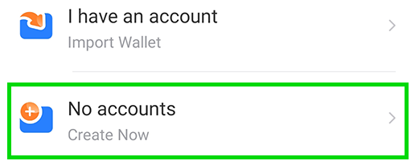
1. On the next page, find Binance Smart Chain in the list and tap it.
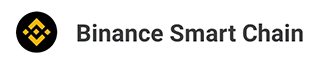
1. Next, on the "Create way" page, tap Create Wallet.
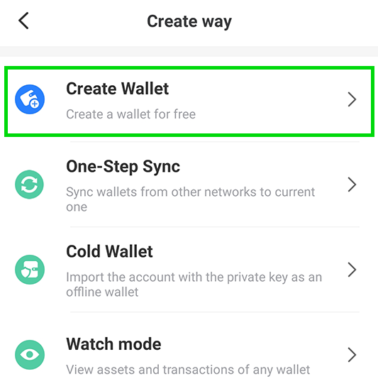
1. You’ll be asked to enter a password. For your security, make sure your password is judged as “Strong”. You can also add a hint, but make sure it’s something only you will understand. When you’re ready, tap Create Wallet.
And that’s it, all done!
To connect to Binance Smart Chain and use Pluto, you can follow the TokenPocket section of our Connect Your Wallet to Pluto guide https://docs.Pluto.finance/get-started/connection-guide.
Getting private key from mobile to import to desktop
Token Pocket lets you use both a desktop and mobile wallet. This section will cover how to get your private key from your mobile wallet to import into your desktop wallet.
Please be extremely careful with how you handle your private keys. Giving your private keys to someone will give them full access to your coins! Token Pocket is an open source project and will use your private key to import your wallet. Even so, only use your private key with applications you trust and can verify are legitimate!
1 Tap the Me tab on the bottom ribbon and tap Manage Wallets.
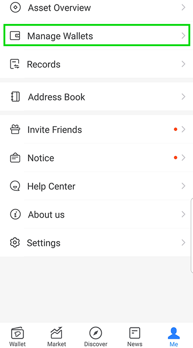
On the next page, tap the Binance Smart Chain entry. Be careful not to tap the address part, or you’ll only copy that to clipboard instead.
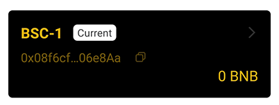
When the menu appears, find and tap the Export Private Key option. Type in your password to get your private key.
**NEVER, in any situation, should you ever give someone your private key or recovery phrase ("seed phrase"). This will give someone complete access to your crypto! The genuine Pluto site and staff will never ask you to input your seed phrase.**
Now you have your private key ready to import your wallet into the desktop version of Token Pocket.
Desktop wallets are available on your home computer or laptop computer. Wallets on your computer can run as standalone applications, or as web browser plugins for popular browsers like Chrome and Firefox.
This comparison table gives an overview of the most popular desktop wallets used with Pluto.
| MetaMask | Binance Wallet | Token Pocket | |
|---|---|---|---|
| Binance Smart Chain support | |||
| Built-in DApp browser | |||
| Hardware wallet compatible | |||
| Open source (auditability) | |||
| Interact with BscScan (for advanced users!) |
Requires additional setup
You can find more in-depth information about each wallet below, as well as download links and installation guides.
MetaMask is a very popular browser-based wallet plugin that supports ERC20 (Ethereum network) by default, and BEP2 & BEP20 (Binance Chain and Binance Smart Chain networks) with a little work.
Pros:
Cons:
Download MetaMask (Automatically detects device)
Binance Wallet is a browser-plugin wallet that natively supports the Binance Chain (BEP2) Binance Smart Chain (BEP20) networks. Binance Wallet was developed by the Binance cryptocurrency exchange.
Pros:
Cons:
Download Binance Wallet (Automatically detects device)
Token Pocket is a standalone application available for both Mac OS and Win64 devices. Token Pocket allows you to manage your cryptocurrency in software independent of your browser.
Pros:
Cons:
Download Token Pocket Desktop Wallet (MacOS or Win64)
Token Pocket Desktop Setup Guide
The desktop version of Token Pocket will ask you to import a private key. Please make sure you’re familiar with and understand the importance of a private key before you proceed.
Token Pocket is an open source project, so the code is publicly visible and generally considered safe. Even so, your private keys are your responsibility, so only use them with applications you trust and can verify.
1. Visit the Token Pocket website on your PC and click the Desktop button.
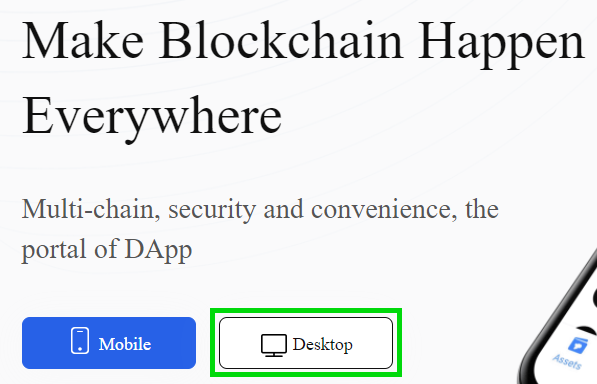1. On the next page, click the button for your operating system and wait for your download to finish. This guide uses Windows, but the process is largely the same on Mac OS.
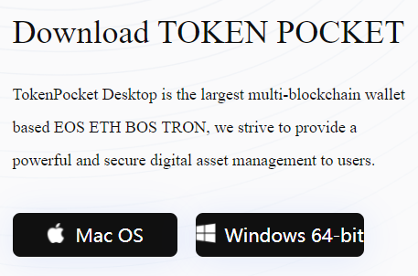1. Run the installation file. It will ask you to choose between making Token Pocket available to everyone using the computer, or just the current user. For your security, we recommend current user only.
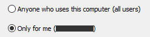1. Enter a destination folder to install to and click Install.
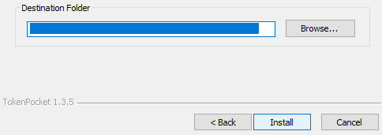1. Once the installation is finished, click Finish and run Token Pocket.
2. When Token Pocket opens, you may find yourself looking at a Chinese interface. You can change to English by clicking EN in the bottom-left corner.
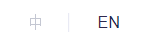Token Pocket will be asking you to create a password. Make sure you use something that’s hard to guess; the longer the password is, the more secure. When you’re done, click Confirm.
On the next page, Token Pocket will be asking you to import a private key. This may be intimidating, but Token Pocket will work as an interface for your existing wallet. You’ll need to get your private from whatever existing wallet you want to use.
Here is a guide for getting your private key from MetaMask. To import your private key from the mobile version of Token Pocket, see the Mobile Token Pocket tab higher up this page. If you use another wallet and don’t know how to get your private key, you’ll need to find a guide.
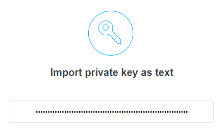Please be extremely careful with how you handle your private keys. Giving your private keys to someone will give them full access to your coins! Token Pocket is an open source project and will use your private key to import your wallet. Even so, only use your private key with applications you trust and can verify are legitimate!
1. Once you’ve entered your private key, click the Ethereum network for now.
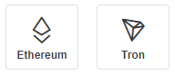And that’s it, all done! You can follow our Connect Your Wallet to Pluto guide to connect to Binance Smart Chain and Pluto.
Sounds like fun?
Then get flipping!